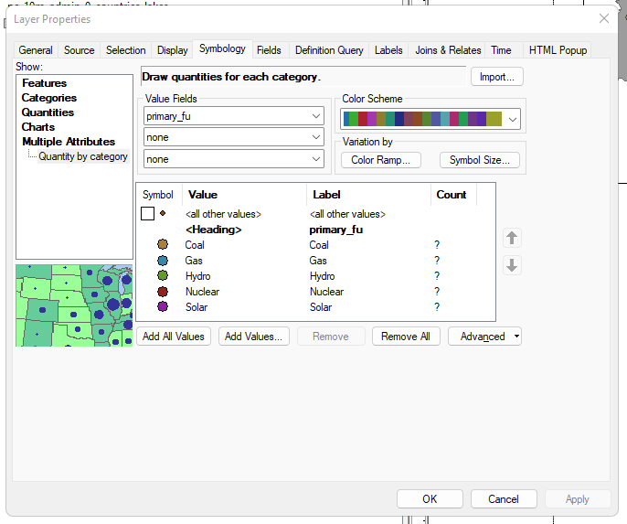
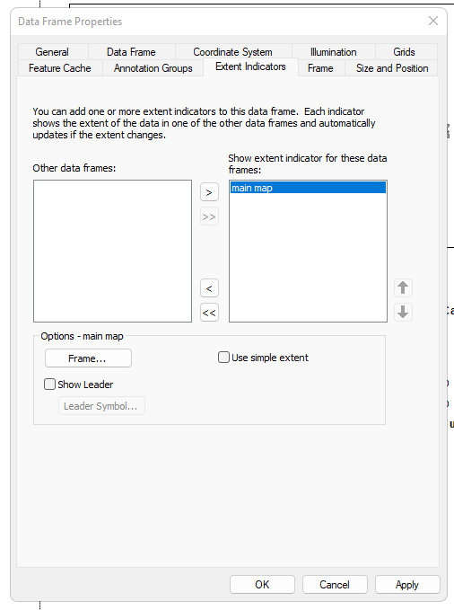

Preamble
In this third technical lab, we will complete any remaining steps of Monday’s demonstration lab then turn to steps necessary for the third assignment. These lab steps should be used extensively to aid with the completion of the second assignment due Sunday evening at 11:59pm.
Data
The data for this demonstration lab comes from the Class 3 Assignment.
Once the download is complete, place the .zip into a directory you make entitled c3lab3. Make sure to fully unzip the data folder.
Connect a new .mxd via ArcCatalog to the new c3lab3 directory and save that new .mxd as c3lab.mxd
Utilize the Class 3 Starter Data.

Step 1
Make sure to connect the
c3lab.mxdto the Class 3 Starter Data as downloaded and uncompressed.For demonstration purposes, the assignment guide and the technical lab will utilize the country of Ukraine as the project Area of Interest. To select an Area of Interest from 1 of the 3 geographic scale levels, first label the respective feature polygon layer as follows:
Right-click Feature Layer at Table of Contents (TOC) > Properties > Labels > Label Field
Step 2
- Next, make a subset selection within the attribute table to select the feature - in this case Ukraine. Here will will make a simple SQL (Structured Query Language) declaration to select Ukraine (replace Ukraine with your choice of geography).
- Once the selection is complete (cyan colored outline will appear on map for the selected feature(s)), export to a folder you make entitled
exportswithin your lab directory.
Step 3
- Next map the
XY Table > Feature Classfor the Global Power Plant Database. Your results when mapped should be atop Ukraine in this example:
XY Table > Feature Class Global Power Plant Database
XY Table > Feature Class Global Power Plant Database- Once complete, proceed to
Select by Location, inputting the tool, and outputting the results correctly into theexportsfolder within your assignment directory:
Step 4
- Remove the original Global Power Plant Feature Class from your TOC; create a spatial bookmark, centering your Data Frame to Ukraine in the example. Save the project
.mxd:

Step 5
Next symbolize the Power Plant Feature Points across two dimensions:
Categorical color for
Fuel TypeProportional size for
Power CapacityUtilize the
Multiple Attributestoolset underSymbologyto first apply categorical colors, then within the tool again applySymbol Sizeto the layer using the default 5 Class Natural Breaks Classification.

Multiple Attribute Symbology to the Power Plant Points within the geographic featureMultiple Attribute Symbology to the Power Plant Points within the geographic feature: adding Symbol SizeStep 6
- While the appearance is now correct at the Data Frame, the current legend item in the TOC shows each fuel type separately as 5 size classes. This legend appearance can be revised further for a better final legend. Here we will keep the current layer in the TOC, but we will save each color style for each fuel in the mapping to the Styles Manager.
Increase the icon size and/or change the icon shape so that the legend item in the final layout is more prominent than the default point style. Further, apply transparency to the Multiple Attributes layer if you want to see overlapping points in your final mapping.
- Next, Tooggle OFF the primary layer and import a new instance of the layer and make additions from the Styles Manager.
Next, import another instance of the layer, and apply the proportional sizes to the layer, keeping only the symbol outline, not the default color. Make sure to continue to use 5 Class Natural Breaks as the method in order to match with the main map symbolization for Power Plant capacity size:
Finally, detach the legend from the map items in the TOC by making the legend a graphics feature. This allows you to then Toogle OFF the symbolization layers in the TOC and allow the primary layer to be displayed in the map without complication from the overlapping symbolization layers:

Note that once the Legend Item becomes a Graphics Feature, you cannot effectively edit the legend. Make sure to make all revisions to the legend prior to making it a Graphics Feature.
Step 7
Before proceeding to the scale bar creation and inset map, save the
.mxd.To create the scale bar, navigate to Items on the top menu bar and choose a bar style. Note that there are many parameters to scale bars that can be revised to get exactly the appearance and measurements that best suit your main map frame. We will review these parameters here.
Step 8
Following the scale bar item, move to the inset map item. Here are two options to create this item.
- Create a Bounding Box Geometry for either the subset power plant data or the polygon feature that you are using as your map focus.
- Utilize the Extent Indicator function to create a polygon representation of the Main Map Data Frame.
We will review these two options in some depth together.

Concluding Remarks
In this tutorial lab for the WRI Global Power Plant Dataset, we introduced new selection methods - Select by Attributes and Select by Location. We utilized the XY Table to Feature Class method for points data. Once our data was prepared for mapping, we created a complex multiple attribute (bivariate mapping) mapping and developed a further layout dimension through good cartographic conventions for map scale and insets for an extent indicator.